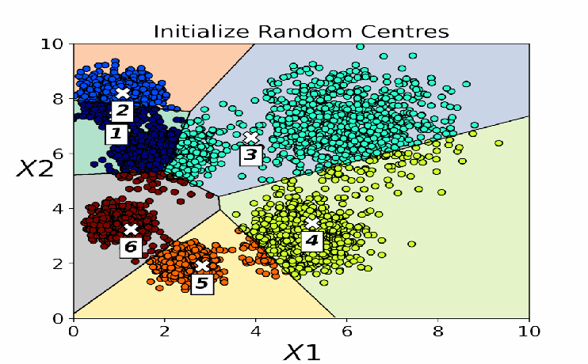
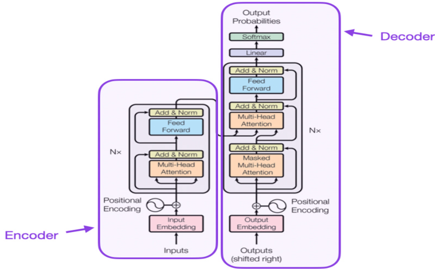
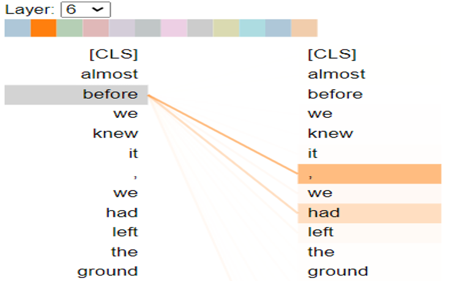
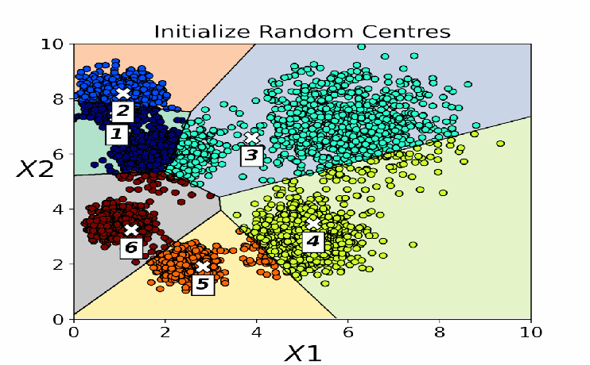
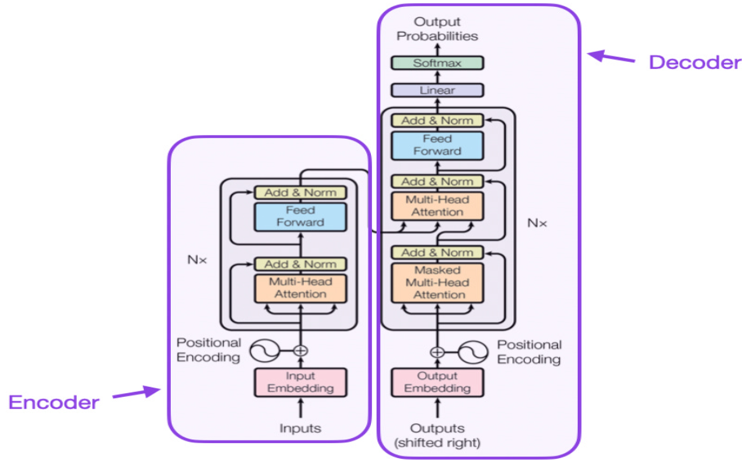
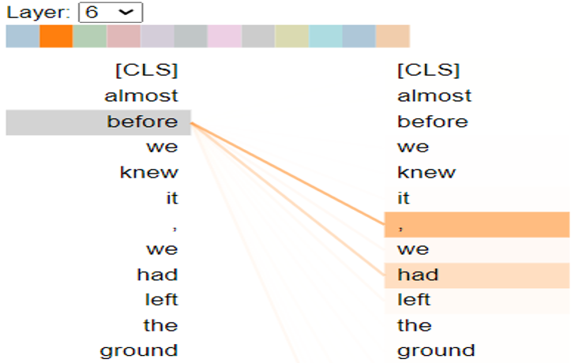
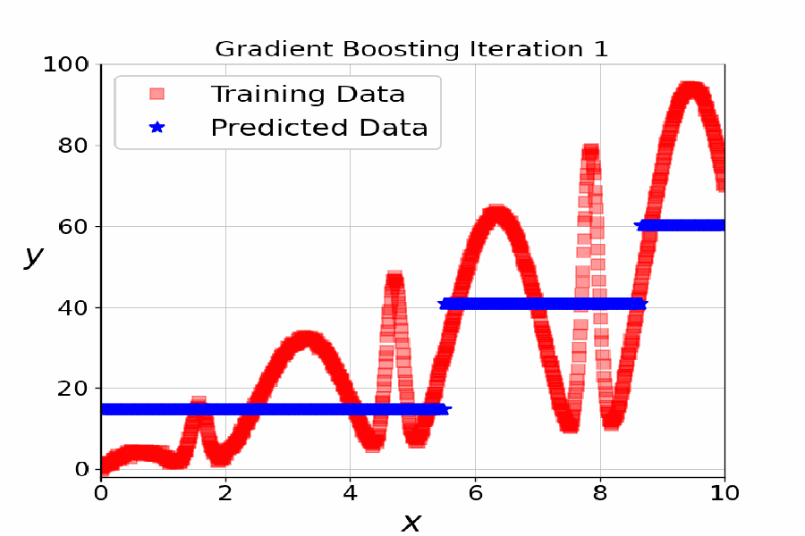
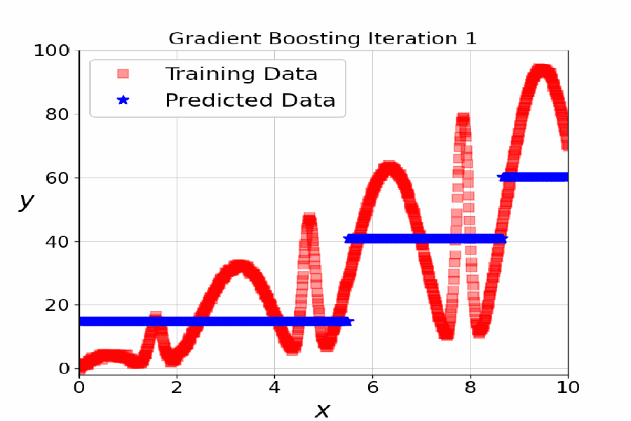

|
Hi, I am Mehdi
Welcome to my personal webpage! |
|
I am a data scientist with a proven track record in applying mathematical statistics and predictive algorithms to tackle complex challenges across finance, engineering and academia. Holding a PhD in Geostatistics from the University of Alberta, Canada. Currently, I hold the position of Principal Data Scientist at a prominent financial company. I have shared some of my noteworthy projects, lectures, and publications on my website—feel free to explore and gain insights into my professional journey.
|
 





 

|